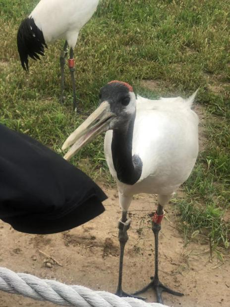
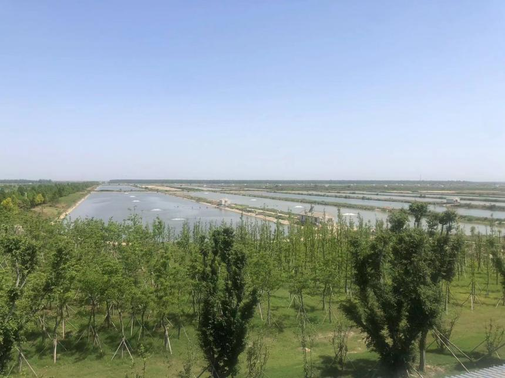
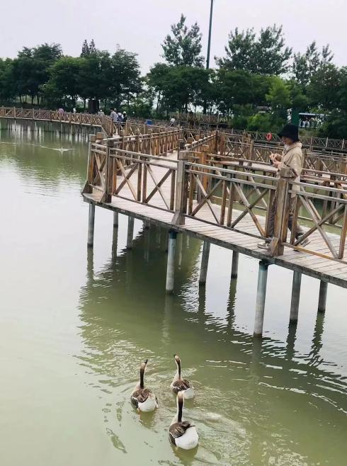
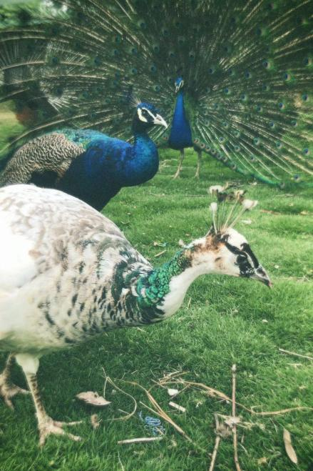
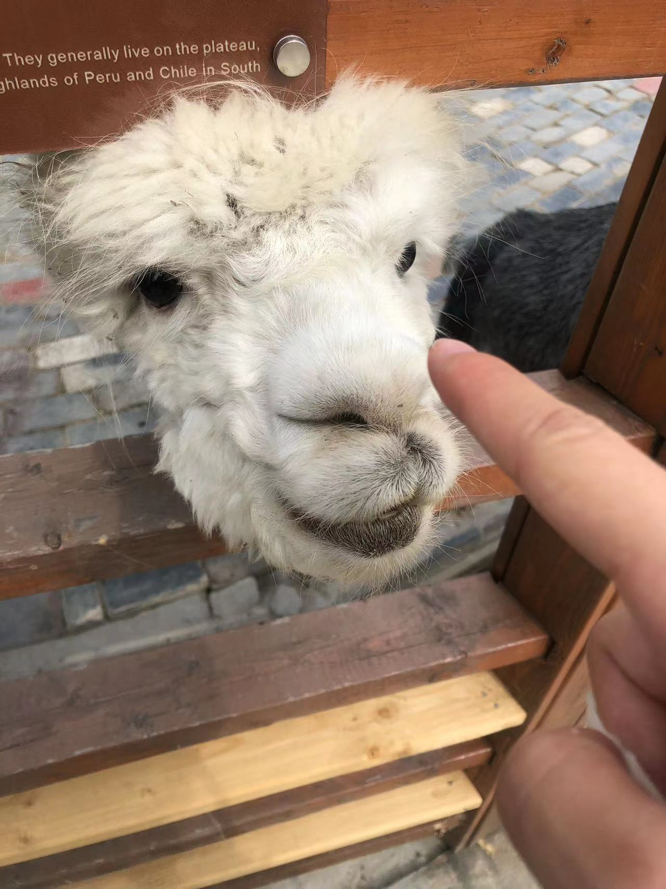
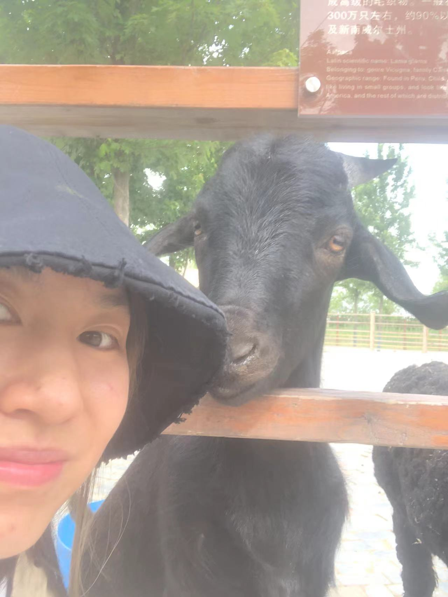
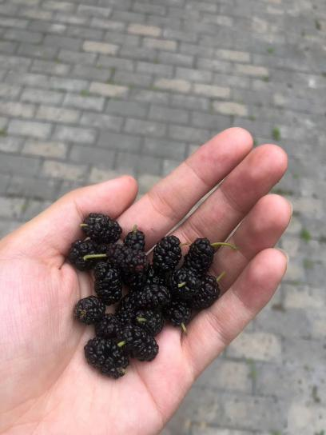
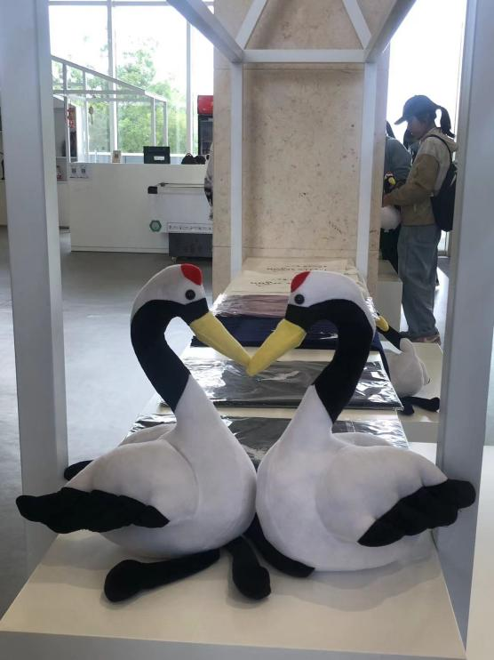

Not every four years was only coursework and clubs. A basketball court, one essay I kept coming back to, and two trips that put ecology outdoors instead of in a textbook.
In November 2020, I played for Nanjing Agricultural University's women's team in the joint Jiangsu Provincial Collegiate Basketball League finals and the 23rd CUBA Division II Jiangsu regional finals, held in Nanjing. The certificate lists me individually as a competing player, not just a team roster name.
Among everything I wrote as an undergraduate, this is the one I singled out and kept: a class response paper on a real puzzle in evolutionary biology. Same-sex sexual behavior is widespread across the animal kingdom even though it produces no offspring, which naive natural-selection logic says should have been selected against long ago. I read through the literature and organized the explanations into three families.
A "genderblind" gene in fruit flies disrupts pheromone processing and can turn same-sex courtship on or off; a similar mechanism in nematodes "masculinizes" hermaphrodites so they attract each other.
Bonobos and dolphins use it to ease tension and bond; male cockroaches mimic females to steal mates; albatross pairs co-raise chicks when sex ratios skew, cutting reproductive competition.
In damselflies, it looks less like strategy and more like a reaction to female scarcity; in termites, it may be inherited behavioral flexibility rather than indiscriminate mating.
My conclusion leaned toward the second and third families overlapping: a flexible trait that can boost reproductive success indirectly, lower group conflict, or buffer against harassment, and persists because it is so adaptable across such different animals.
I was explicit that this is a question about animal behavior and evolutionary biology, not a statement about human sexual orientation, and I was careful not to conflate the two.
Two separate practicums, a year apart, took me from a straw-processing plant outside Nanjing to a wetland reserve where red-crowned cranes are bred back from the edge.
Four days touring NAU's Baima research farm and its partner sites: a phenotyping chamber that simulates weather for plant trials, drainage ditches engineered to filter nitrogen and phosphorus runoff, and a straw-to-biochar plant where crushed straw is pyrolyzed at roughly 800°C outside and 400°C inside, yielding biochar, wood vinegar, and syngas that gets recycled back into the kiln. The trip closed at an organic vegetable farm using pheromone lures and sticky boards instead of pesticides, and windrow composting for its vegetable waste.
A longer trip across Jiangsu: a central-kitchen supply chain feeding 100,000 school meals a day off smart, soilless greenhouses and a 30,000-mu fish farm with centralized monitoring; a 1952-era agricultural experiment station trialing salt-tolerant crops; the Yancheng wetland reserve, where I watched captive-bred red-crowned cranes up close and a flight demonstration, and talked through invasive cordgrass as a threat to the marsh; and a wetland boat tour that ended in a hands-on quadrat survey, measuring plant cover, soil temperature and pH by hand.








"Four years of ecology on paper, and a few afternoons of it in the mud, feathers, and fur."